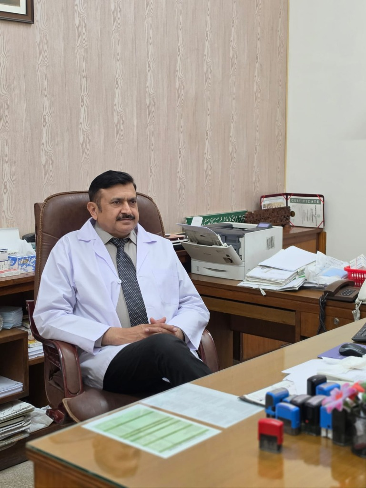

Consultant Surgeon
Dr. Muhammad Naeem Surgeon
MBBS, FCPS (Surgery)
Senior Consultant General, Breast & Endocrine Surgeon with extensive clinical and operative experience.
Specialized Surgical Care for Breast Cancer, Thyroid Conditions, and General Surgical Consultation.

Dr. Muhammad Naeem is a Consultant Surgeon based in Faisalabad, specializing in breast cancer surgery, thyroid procedures, and general surgical consultation. His practice is built on a simple belief: every patient deserves clear explanations, honest guidance, and care that respects their concerns.
From your first consultation through recovery, Dr. Naeem takes the time to understand your condition, walk you through your options, and help you make informed decisions with confidence.
Dedicated to exemplary surgical standards, compassionate communication, and comprehensive pre & post-operative care across Faisalabad.
Senior Consultant General, Breast & Endocrine Surgeon with extensive clinical and operative experience.
Personally evaluating imaging, ultrasound reports, and laboratory scans with patients in clinic.
Specialized surgical care for breast oncoplastic procedures, thyroid goiter, and general surgeries.
From your first question to your recovery, understand your options and make informed decisions with dedicated surgical guidance.
Removes the tumor and a small margin of surrounding tissue while conserving most of the breast. Suitable for early-stage breast cancer.
The first few lymph nodes draining the tumor area are removed and tested. If cancer-free, extensive node removal is avoided.
Removes the entire breast and axillary lymph nodes while keeping chest muscles intact when cancer has spread to nodes.
Rebuilds breast shape after mastectomy using implants or natural tissue, either immediately or as a delayed procedure.
Specialized surgical care for benign thyroid nodules, multinodular goiter, thyroid cysts, and thyroid malignancies.
Comprehensive surgical evaluation, second opinions, pre-operative screening, and personalized post-surgical recovery care.
Every condition is unique. Procedure suitability is determined after an individual clinical assessment.
Share your concerns, review your medical history, and get answers in a supportive setting.
Appropriate imaging and lab tests help build a clear understanding of your condition.
Understand your options, benefits, risks, and an individualized treatment plan.
Receive recovery guidance, wound-care advice, and follow-up to support your healing.
Consultations at three prime hospital & clinic locations in Faisalabad. Please call to confirm OPD timings before visiting.
Plot No 5, Kohinoor City Madina Town, Faisalabad, Punjab
Mon–Thu (4:00 PM – 7:00 PM) · OPD by Appointment
03007991099673-A Lower Canal Rd E, Block A People's Colony No 1, Faisalabad, Punjab
Fri–Sat (6:00 PM – 9:00 PM) · OPD by Appointment
03007991099Muslim Town No. 1, Gate No. 2, Muslim Town Market, Near Rehman Masjid, Sargodha Road, Faisalabad
OPD & Consultation · Call to confirm timings
03007991099Most thyroid nodules are benign, but some require evaluation. Learn what symptoms warrant a surgical consultation.
Practical steps to prepare for surgery, from pre-operative tests to recovery planning, so you feel informed and confident.
Recognising early signs of breast cancer and understanding screening options can lead to earlier, more effective treatment.
Whether you need a consultation, a second opinion, or guidance on surgery, take the first step with confidence.
“Personally reviewing every consultation request to ensure prompt, compassionate surgical care.”
Leave your details to request a suitable appointment time.
For emergency trauma or immediate acute emergencies, please visit the hospital emergency department directly.
Select your role to sign into the system